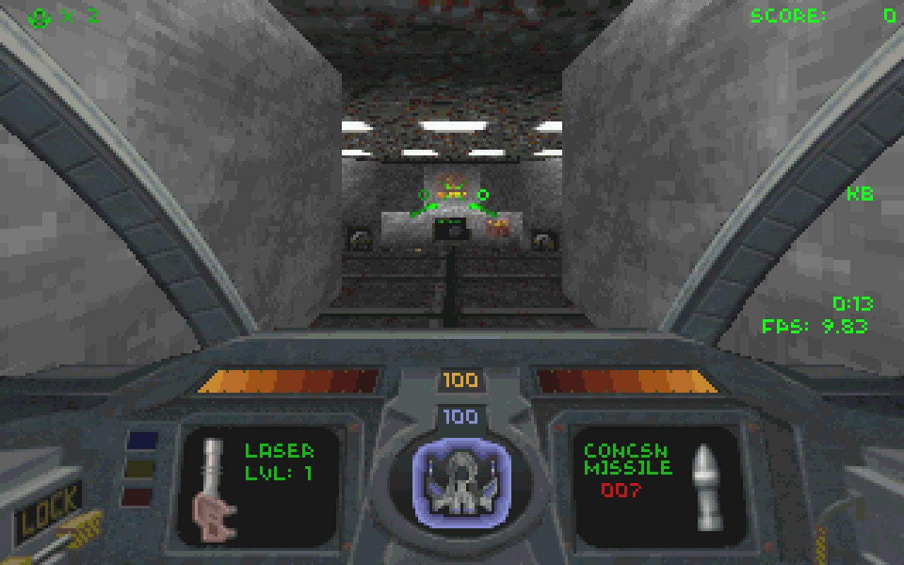
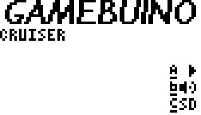
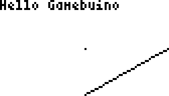

Writing a 3D portal engine for the Gamebuino
A low-resolution, bumpy ride through the innards of the Gamebuino and an eulogy to state of the art1 computer graphics by N. Harold Cham.
1 as of 20+ years ago
This is a small writeup about my efforts to bring a 6 degrees-of-freedom 3D shooter to the Gamebuino. Think, cough, Descent™. Here’s a screenshot that might bring back some memories:

Yeah! Endless, nested corridors! Huge pixels on the walls! Lasers! Concsn missiles! I was sold on the game pretty instantly. The thing that set the game apart from Wolfenstein 3D and Doom for me (as Quake wasn’t on the horizon just yet) was the true 3D environment and player movement.
Coming across the Gamebuino, I thought: “Wouldn’t it be nice to bring this kind of 3D immersion to this neat little retro device?”
If you think, no, actually it wouldn’t, this may actually be a good time to stop reading.
Now, if you’re wondering what good it might be to read this when you don’t even have a Gamebuino here’s my recommendation for you: Get one at the Gamebuino shop, or dust off your soldering iron and make your own MAKERbuino. Or try one of the available emulators, I’ve found gbsim to work pretty well on Linux.
Here we have a small, Arduino-based gaming console, powered by a small CPU chugging along dutifully at 16 MHz. Its memory is tiny compared to today’s standards: we have 32 kb of flash for storing program code, 2 kb of RAM, and 1 kb of EEPROM to store persistent information which survives power cycles. A black-and-white screen with 84×48 pixels. What could possibly go wrong?
A beginning
Let’s start with a minimal program to see what programming the Gamebuino is like. Fire up the Arduino IDE, install the Gamebuino library and let’s try this:
#include <Gamebuino.h> Gamebuino gb; void setup() { gb.begin(); gb.titleScreen(F("CRUISER")); gb.battery.show = false; } void loop() { if (gb.update()) { gb.display.println(F("Hello Gamebuino")); gb.display.drawPixel(42, 24); gb.display.drawLine(42, 47, 83, 24); } }
| Flash usage | 10118 / 32256 b | |
| Min RAM usage | 693 / 2048 b |
Below the code, you see the amount of flash memory and RAM occupied by the program. With a RAM that small, it’s important to keep an eye on these numbers, because the remaining RAM is used all over the place: everytime you call a function, a new stack frame gets created and the return address is stored in RAM, along with all local variables defined in the function.
Recursive function calls are even worse with a small RAM, because the stack frames keep accumulating, quickly leading to a stack overflow and therefore, a halt of the system.
I’m adding these little bar charts to keep track of how much space we still have left as we add features, before we run out of memory. It’s a good way to visualize the upper limit.
Pro tip: You may wonder why we only have 32256 bytes of flash memory available when 32 kb were advertised. According to the stories and the lore which is passed along throughout the centuries, 512 bytes are already taken up by the bootloader, which leaves us with 32256 bytes.
As in every regular Arduino program, we have the setup() and loop() functions. We initialize the Gamebuino library via gb.begin(), display a title screen and tell the library not to show the battery status on the screen.
In the loop() function, we check whether it’s time to update the screen and if so, we print some text, draw a pixel, and finally draw a line.
Note: The F() function is a mechanism to move constant string data from RAM to flash memory, of which we have, err… “plenty”, at least compared to 2 kb of RAM.
Using F() around strings, the compiler tells us we’re using 693 bytes of RAM. Without it, we’re at 717 bytes of RAM, the difference being exactly 24 bytes, which amounts to the total character data in our program plus a trailing \0 for each of both strings. If you only have 2048 bytes of RAM, you’ll want to save it wherever you can.
Running the program gives the following:
 
We see the title screen known from other Gamebuino games and pressing A starts the program.
Just take a moment to sit back and enjoy the beauty of the vista laid out in front of us. Here we are, with a working minimal example, we can make the Gamebuino do whatever we want (well, almost), and we can draw individual pixels.
“Give me a drawPixel() and I’ll paint the world!”
Splendid! However, once we started the game, there’s no going back to the title screen. So let’s fix that by handling a press of the C button:
#include <Gamebuino.h> Gamebuino gb; void title_screen() { gb.titleScreen(F("CRUISER")); gb.battery.show = false; } void setup() { gb.begin(); title_screen(); } void loop() { if (gb.buttons.pressed(BTN_C)) title_screen(); if (gb.update()) { gb.display.println(F("Hello Gamebuino")); gb.display.drawPixel(42, 24); gb.display.drawLine(42, 47, 83, 24); } }
| Flash usage | 10186 / 32256 b | |
| Min RAM usage | 693 / 2048 b |
Now when the C button is pressed, it’s back to the title screen. Because we need to call the gb.titleScreen() function from two different places now, I moved the call into a separate function title_screen() which also tells the library not to show the battery because gb.titleScreen() disables it while it’s running and then enables the battery symbol again regardless of whether it was on or off before.
During development, it might be handy not always having to go through the title screen, so let’s make it optional during development by introducing a preprocessor flag:
#include <Gamebuino.h> // #define SHOW_TITLE_SCREEN Gamebuino gb; void title_screen() { #ifdef SHOW_TITLE_SCREEN gb.titleScreen(F("CRUISER")); #endif gb.battery.show = false; } void setup() { gb.begin(); title_screen(); } void loop() { if (gb.buttons.pressed(BTN_C)) title_screen(); if (gb.update()) { gb.display.println(F("Hello Gamebuino")); gb.display.drawPixel(42, 24); gb.display.drawLine(42, 47, 83, 24); } }
| Flash usage | 9158 / 32256 b | |
| Min RAM usage | 693 / 2048 b |
Now, unless we have SHOW_TITLE_SCREEN defined, we’ll be taken right to the game, no need the press play on tape the A button first. Likewise, pressing C doesn’t bring us to the title screen, but resets the game instantly. Also note that just leaving away the title screen saves us a whole kb of precious flash memory. This is because the compiler doesn’t include dead code, that is, code that’s written but never used anywhere, in the executable. Tempting as it may be to buy a kb of flash memory this way, it’s not really feasible because it breaks the player’s expectations which include a straightforward way to return to the game loader from the title screen by pressing the C button (instead of holding down C and rebooting the device to flash the loader).
Monitoring RAM usage
Speaking of memory usage, let’s add some more monitoring before we start diving into programming. The RAM usage reported by the compiler is the minimum amount of used RAM, but we have no idea about the actual, maximum amount of RAM used. In order to obtain this information, we define a macro called MONITOR_RAM_UPDATE which we call at the beginning of every function. It checks the available RAM and updates a global variable if the current RAM usage is higher than ever before. We have to output the value in the program itself, via the display, to get the value, and it’s reflected in the third bar chart under “Max RAM usage” (see below).
Because monitoring the RAM itself uses some flash memory and RAM, there’s a preprocessor option to switch RAM monitoring on or off (MONITOR_RAM).
#include <Gamebuino.h> // #define SHOW_TITLE_SCREEN #define MONITOR_RAM Gamebuino gb; #ifdef MONITOR_RAM int MIN_FREE_RAM = 0xffff; void update_min_free_ram() { if (gb.getFreeRam() < MIN_FREE_RAM) MIN_FREE_RAM = gb.getFreeRam(); } #define MONITOR_RAM_UPDATE update_min_free_ram(); #else #define MONITOR_RAM_UPDATE #endif void title_screen() { MONITOR_RAM_UPDATE #ifdef SHOW_TITLE_SCREEN gb.titleScreen(F("CRUISER")); #endif gb.battery.show = false; } void setup() { MONITOR_RAM_UPDATE gb.begin(); title_screen(); } void loop() { MONITOR_RAM_UPDATE if (gb.buttons.pressed(BTN_C)) title_screen(); if (gb.update()) { gb.display.println(F("Hello Gamebuino")); #ifdef MONITOR_RAM gb.display.println(2048 - MIN_FREE_RAM); #endif gb.display.drawPixel(42, 24); gb.display.drawLine(42, 47, 83, 24); } }
| Flash usage | 9382 / 32256 b | |
| Min RAM usage | 699 / 2048 b | |
| Max RAM usage | 711 / 2048 b |
Now this brings us closer to the true value, but it still isn’t entirely accurate: whenever we call a library function in one of our functions, the maximum amount of used RAM will not get updated, so the true maximum will always be higher.
Let’s draw something!
The peculiar thing about 3D graphics is that we have to get a couple of non-trivial things right before we can draw anything to the screen. We have to think about how we want to define the world we’re moving around in and how to convert the current state of the game to a rasterized, graphical representation.
Let’s start by defining a struct to represent 3D vectors:
struct vec3d { float x, y, z; vec3d() : x(0.0), y(0.0), z(0.0) {} vec3d(float _x, float _y, float _z) : x(_x), y(_y), z(_z) {} // vector addition vec3d operator +(const vec3d& other) { return vec3d(x + other.x, y + other.y, z + other.z); } void operator +=(const vec3d& other) { x += other.x; y += other.y; z += other.z; } // vector subtraction vec3d operator -(const vec3d& other) { return vec3d(x - other.x, y - other.y, z - other.z); } void operator -=(const vec3d& other) { x -= other.x; y -= other.y; z -= other.z; } // vector multiplication with scalar value vec3d operator *(float d) { return vec3d(x * d, y * d, z * d); } void operator *=(float d) { x *= d; y *= d; z *= d; } // dot product float dot(const vec3d& other) { return x * other.x + y * other.y + z * other.z; } // cross product vec3d cross(const vec3d& other) { return vec3d((y * other.z) - (z * other.y), (z * other.x) - (x * other.z), (x * other.y) - (y * other.x)); } float length() { return sqrt(x * x + y * y + z * z); } void normalize() { float len1 = 1.0 / length(); x *= len1; y *= len1; z *= len1; } };
Next, we have to define a 3D coordinate system. For this game, let’s stick to the right-handed coordinate system: X points to the right, Y points up, and Z points away from the screen, into the direction of the viewer. It’s called right-handed because you can use your right hand to determine which direction is which: your thumb is the X axis, pointing right, your index finger is the Y axis, pointing up, and your middle finger is Z (in a left-handed coordinate system, Z would thus point into the screen, away from the viewer).
Try it for yourself, it’s a simple way to come to terms with three dimensions. It really doesn’t matter which system we choose, but it’s important that we stick to one system throughout the project. Oh, just to think of the confusion that lies ahead. Next time you see somebody tangling their fingers in front of their screen, you’ll know what’s up. Go on, give them a conspiratorial wink to show them just how much you’re in the know.
Defining geometry
Projection
So now that we have our coordinate system set up (in our mind), we have to define some sort of camera through which the player sees the world. We definitively need a camera position plus some kind of camera orientation which tells us in which direction the camera is pointing. A common way to define a camera in 3D graphics is by defining three vectors called from, at, and up, with from representing the camera position, at representing a point the camera is looking at and up defining a point above the camera.
Now that we’ve got the camera position and orientation covered, what’s still missing in the camera definition is the rectangular image region that represents the screen. We can define it via the horizontal and vertical field of view or, in a more practical manner, via the vertical field of view and the image aspect ratio.
The pyramid defined by from and the rectangular image region defined by the remaining parameters is called the viewing frustum. It’s the window into our virtual world, and everything outside this region is invisible.
| Flash usage | 29002 / 32256 b | |
| Min RAM usage | 1277 / 2048 b | |
| Max RAM usage | 1716 / 2048 b |